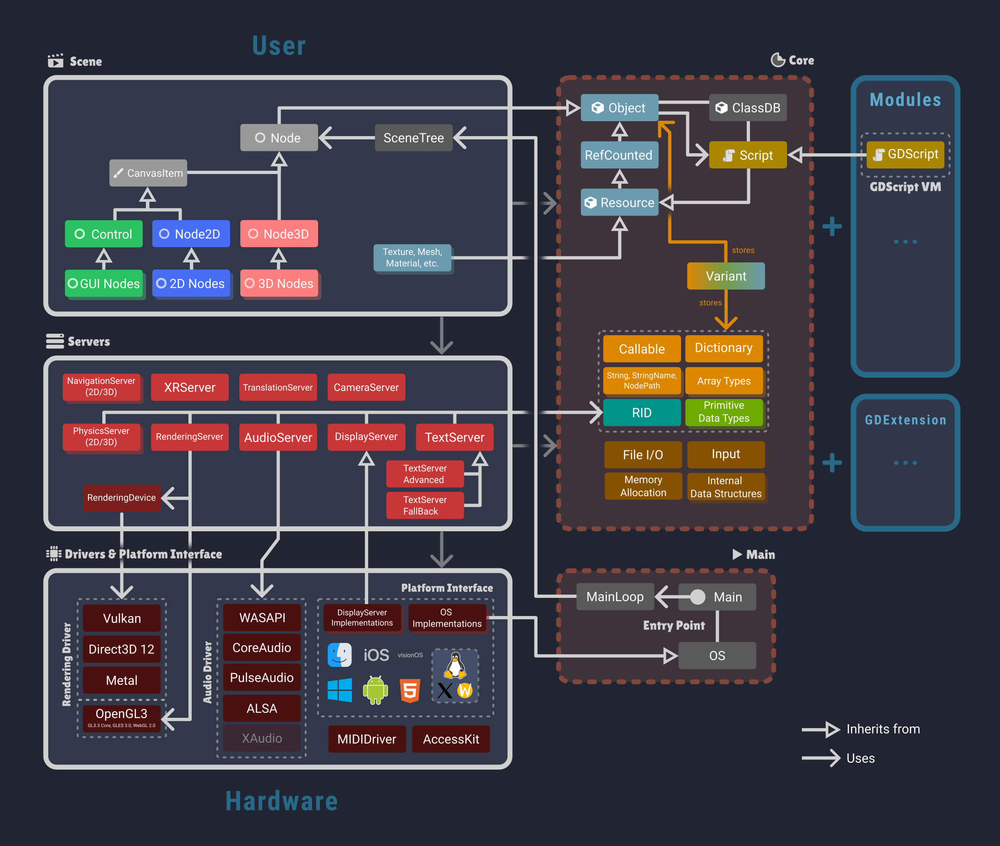

Godot's architecture overview
The following diagram describes the most important aspects of Godot's architecture. It's not designed to be exhaustive, with the purpose of just giving a high-level overview of the main components and their relationships to each other.

Credit: Hendrik Brucker
Scene Layer
The Scene layer is the highest level of Godot's architecture, providing the scene system, which is the main way to build and structure your applications or games. See SceneTree / Using SceneTree and Node for more information.
Corresponding source code: /scene/*
Server Layer
Server components implement most of Godot's subsystems (rendering, audio, physics, etc.). They are singleton objects initialized at engine startup.
Why does Godot use servers and RIDs?
Corresponding source code: /servers/*
Drivers / Platform Interface
This layer abstracts low-level platform-specific details, containing drivers for graphics APIs, audio backends and operating system interfaces (all platform-specific OS and DisplayServer implementations).
Corresponding source code: /drivers/* and /platform/*
Core
The Engine's core contains essential functionality and data structures used throughout the engine, like Object and ClassDB, memory management, containers, file I/O, Variant, and other utilities.
Corresponding source code: /core/*
Main
The Main component is responsible for initializing and managing the engine lifecycle, including startup, shutdown, and the main loop. See MainLoop for more details.
Corresponding source code: /main/*